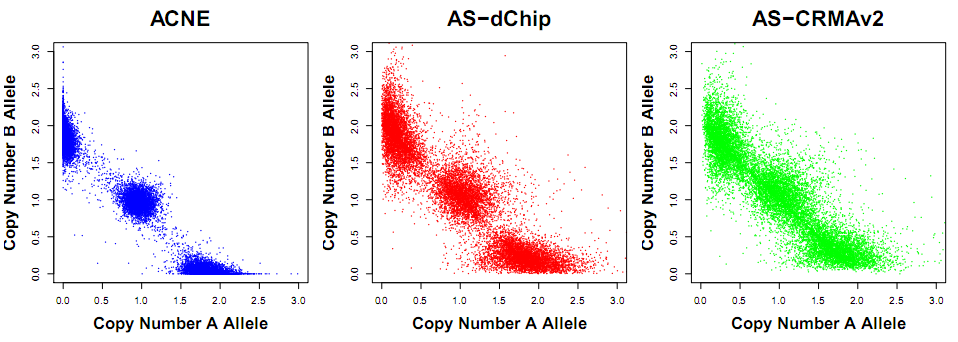
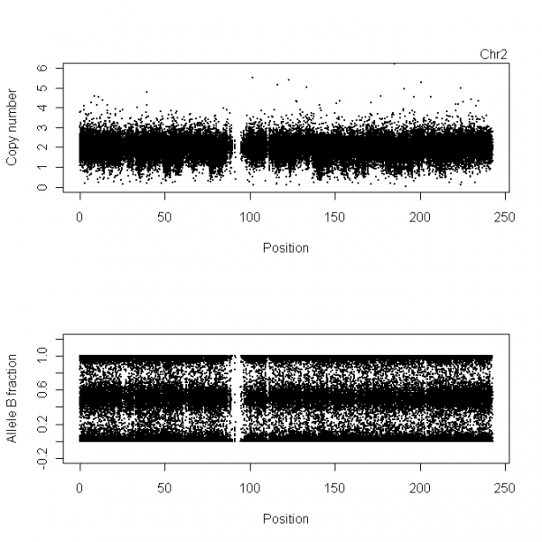

Vignette: ACNE: Allele-specific copy numbers using non-negative matrix factorization
Author: Maria Ortiz (cleanup by Henrik Bengtsson)
Created on: 2009-11-18
Last updated: 2014-12-21

Figure: Allele-specific copy numbers (CA,CB) using ACNE (left), AS-dChip (center) and ASCRMA v2 (right) in a normal region where we know there should be three clouds located around (2,0), (1,1) and (0,2). Data is from an Mapping250K_Nsp data set.
This document describes how to estimate allele specific copy numbers (ASCNs) in aroma.affymetrix using ACNE (Ortiz-Estevez, Bengtsson, and Rubio, 2010). ACNE is a summarization method that provides ASCNs based on signals normalized in a similar way to as CRMA v2 (Bengtsson, Wirapati, and Speed, 2009).
Eight (8) Affymetrix GenomeWideSNP_6 arrays deposited in NCBI-GEO under accession numbers GSE14996 (GSM374529 -- 36) will be used to illustrate the necessary steps in aroma.affymetrix in order to apply ACNE summarization method.
Note: This analysis requires the ACNE package in addition to aroma.affymetrix.
Setup
Annotation data
annotationData/
chipTypes/
GenomeWideSNP_6/
GenomeWideSNP_6,Full.cdf
GenomeWideSNP_6,Full,na26,HB20080821.ugp
GenomeWideSNP_6,Full,na26,HB20080722.ufl
GenomeWideSNP_6,Full,HB20080710.acs
Note that *.Full.cdf have to be renamed to *,Full.cdf (w/ a comma).
Raw data
rawData/
GSE14996,testSet/
GenomeWideSNP_6/
GSM374529.CEL, GSM374530.CEL, GSM374531.CEL, GSM374532.CEL,
GSM374533.CEL, GSM374534.CEL, GSM374535.CEL, GSM374536.CEL
Analysis
Setup
library("aroma.affymetrix")
library("ACNE")
verbose <- Arguments$getVerbose(-10, timestamp=TRUE)
dataSet <- "GSE14996,testSet"
chipType <- "GenomeWideSNP_6"
Annotation data
cdf <- AffymetrixCdfFile$byChipType(chipType, tags="Full")
print(cdf)
which gives:
AffymetrixCdfFile:
Path: annotationData/chipTypes/GenomeWideSNP_6
Filename: GenomeWideSNP_6,Full.cdf
Filesize: 470.44MB
Chip type: GenomeWideSNP_6,Full
RAM: 0.00MB
File format: v4 (binary; XDA)
Dimension: 2572x2680
Number of cells: 6892960
Number of units: 1881415
Cells per unit: 3.66
Number of QC units: 4
and
gi <- getGenomeInformation(cdf)
print(gi)
which gives:
UgpGenomeInformation:
Name: GenomeWideSNP_6
Tags: Full,na26,HB20080821
Full name: GenomeWideSNP_6,Full,na26,HB20080821
Pathname:
annotationData/chipTypes/GenomeWideSNP_6/GenomeWideSNP_6,Full,na26,HB20080821.ugp
File size: 8.97 MB (9407937 bytes)
RAM: 0.00 MB
Chip type: GenomeWideSNP_6,Full
and
print(si)
which gives:
UflSnpInformation:
Name: GenomeWideSNP_6
Tags: Full,na26,HB20080722
Full name: GenomeWideSNP_6,Full,na26,HB20080722
Pathname:
annotationData/chipTypes/GenomeWideSNP_6/GenomeWideSNP_6,Full,na26,HB20080722.ufl
File size: 7.18 MB (7526454 bytes)
RAM: 0.00 MB
Chip type: GenomeWideSNP_6,Full
Number of enzymes: 2
Then
acs <- AromaCellSequenceFile$byChipType(getChipType(cdf, fullname=FALSE))
print(acs)
which outputs:
AromaCellSequenceFile:
Name: GenomeWideSNP_6
Tags: Full,HB20080710
Full name: GenomeWideSNP_6,Full,HB20080710
Pathname:
annotationData/chipTypes/GenomeWideSNP_6/GenomeWideSNP_6,Full,HB20080710.acs
File size: 170.92 MB (179217531 bytes)
RAM: 0.00 MB
Number of data rows: 6892960
File format: v1
Dimensions: 6892960x26
Column classes: raw, raw, raw, raw, raw, raw, raw, raw, raw, raw, raw,
raw, raw, raw, raw, raw, raw, raw, raw, raw, raw, raw, raw, raw, raw,
raw
Number of bytes per column: 1, 1, 1, 1, 1, 1, 1, 1, 1, 1, 1, 1, 1, 1, 1,
1, 1, 1, 1, 1, 1, 1, 1, 1, 1, 1
Footer: \<createdOn\>20080710 22:47:02
PDT\</createdOn\>\<platform\>Affymetrix\</platform\>\<chipType\>GenomeWideSNP_6\</chipType\>\<srcFile\>\<filename\>GenomeWideSNP_6.probe_tab\</filename\>\<filesize\>341479928\</filesize\>\<checksum\>2037c033c09fd8f7c06bd042a77aef15\</checksum\>\</srcFile\>\<srcFile2\>\<filename\>GenomeWideSNP_6.CN_probe_tab\</filename\>\<filesize\>96968290\</filesize\>\<checksum\>3dc2d3178f5eafdbea9c8b6eca88a89c\</checksum\>\</srcFile2\>
Chip type: GenomeWideSNP_6
Platform: Affymetrix
Raw data
cs <- AffymetrixCelSet$byName(dataSet, cdf=cdf)
print(cs)
AffymetrixCelSet:
Name: GSE14996
Tags: testSet
Path: rawData/GSE14996,testSet/GenomeWideSNP_6
Platform: Affymetrix
Chip type: GenomeWideSNP_6,Full
Number of arrays: 8
Names: GSM374529, GSM374530, ..., GSM374536
Time period: 2007-09-21 18:56:58 -- 2007-12-31 12:29:36
Total file size: 526.64MB
RAM: 0.01MB
Pre-processing
Cross-talk calibration
acc <- AllelicCrosstalkCalibration(cs, model="CRMAv2")
print(acc)
AllelicCrosstalkCalibration:
Data set: GSE14996
Input tags: testSet
User tags: *
Asterisk ('*') tags: ACC,ra,-XY
Output tags: testSet,ACC,ra,-XY
Number of files: 8 (526.64MB)
Platform: Affymetrix
Chip type: GenomeWideSNP_6,Full
Algorithm parameters: (rescaleBy: chr "all", targetAvg: num 2200,
subsetToAvg: chr "-XY", mergeShifts: logi TRUE, B: int 1, flavor: chr
"sfit", algorithmParameters:List of 3, ..\$ alpha: num [1:8] 0.1 0.075
0.05 0.03 0.01 0.0025 0.001 0.0001, ..\$ q: num 2, ..\$ Q: num 98)
Output path: probeData/GSE14996,testSet,ACC,ra,-XY/GenomeWideSNP_6
Is done: FALSE
RAM: 0.00MB
csC <- process(acc, verbose=verbose)
print(csC)
AffymetrixCelSet:
Name: GSE14996
Tags: testSet,ACC,ra,-XY
Path: probeData/GSE14996,testSet,ACC,ra,-XY/GenomeWideSNP_6
Platform: Affymetrix
Chip type: GenomeWideSNP_6,Full
Number of arrays: 8
Names: GSM374529, GSM374530, ..., GSM374536
Time period: 2007-09-21 18:56:58 -- 2007-12-31 12:29:36
Total file size: 526.64MB
RAM: 0.01MB
Nucleotide-position sequence normalization
bpn <- BasePositionNormalization(csC, target="zero")
print(bpn)
BasePositionNormalization:
Data set: GSE14996
Input tags: testSet,ACC,ra,-XY
User tags: *
Asterisk ('*') tags: BPN,-XY
Output tags: testSet,ACC,ra,-XY,BPN,-XY
Number of files: 8 (526.64MB)
Platform: Affymetrix
Chip type: GenomeWideSNP_6,Full
Algorithm parameters: (unitsToFit: chr "-XY", typesToFit: chr "pm",
unitsToUpdate: NULL, typesToUpdate: chr "pm", shift: num 0, target: chr
"zero", model: chr "smooth.spline", df: int 5)
Output path:
probeData/GSE14996,testSet,ACC,ra,-XY,BPN,-XY/GenomeWideSNP_6
Is done: FALSE
RAM: 0.00MB
csN <- process(bpn, verbose=verbose)
print(csN)
AffymetrixCelSet:
Name: GSE14996
Tags: testSet,ACC,ra,-XY,BPN,-XY
Path: probeData/GSE14996,testSet,ACC,ra,-XY,BPN,-XY/GenomeWideSNP_6
Platform: Affymetrix
Chip type: GenomeWideSNP_6,Full
Number of arrays: 8
Names: GSM374529, GSM374530, ..., GSM374536
Time period: 2007-09-21 18:56:58 -- 2007-12-31 12:29:36
Total file size: 526.64MB
RAM: 0.01MB
Probe summarization using non-negative-matrix factorization (NMF)
plm <- NmfSnpPlm(csN, mergeStrands=TRUE)
print(plm)
NmfSnpPlm:
Data set: GSE14996
Chip type: GenomeWideSNP_6,Full
Input tags: testSet,ACC,ra,-XY,BPN,-XY
Output tags: testSet,ACC,ra,-XY,BPN,-XY,NMF,v4
Parameters: (probeModel: chr "pm"; shift: num 0; mergeStrands: logiTRUE).
Path: plmData/GSE14996,testSet,ACC,ra,-XY,BPN,-XY,NMF,v4/GenomeWideSNP_6
RAM: 0.00MB
if (length(findUnitsTodo(plm)) > 0) {
# Fit CN probes quickly (~5-10s/array + some overhead)
units <- fitCnProbes(plm, verbose=verbose)
str(units)
# int [1:945826] 935590 935591 935592 935593 935594 935595 ...
# Fit remaining units, i.e. SNPs (~5-10min/array)
units <- fit(plm, verbose=verbose)
str(units)
}
ces <- getChipEffectSet(plm)
print(ces)
SnpChipEffectSet:
Name: GSE14996
Tags: testSet,ACC,ra,-XY,BPN,-XY,NMF,v4
Path:
plmData/GSE14996,testSet,ACC,ra,-XY,BPN,-XY,NMF,v4/GenomeWideSNP_6
Platform: Affymetrix
Chip type: GenomeWideSNP_6,Full,monocell
Number of arrays: 8
Names: GSM374529, GSM374530, ..., GSM374536
Time period: 2009-11-19 10:51:15 -- 2009-11-19 10:51:16
Total file size: 215.59MB
RAM: 0.01MB
Parameters: (probeModel: chr "pm", mergeStrands: logi TRUE)
Results
Extracting allele-specific CNs
Example: ASCNs for Chromosome 2
chromosome <- 2
units <- getUnitsOnChromosome(gi, chromosome=chromosome)
str(units)
## int [1:153663] 26048 26049 26050 26052 26053 26054 26055 26056 26057 26058 ...
pos <- getPositions(gi, units=units)
str(pos)
## int [1:153663] 102496 141464 155674 160576 160616 166395 179818 179972 214086 214192 ...
Example: ASCNs for Sample #1
cf <- ces[[1]]
data <- extractTotalAndFreqB(cf, units=units)
CT <- data[,"total"]
# NmfSnpPlm returns relative ASCNs (CA, CB) already standardized to the pool of all arrays.
C <- CT
cn <- RawCopyNumbers(C, pos, chromosome=chromosome)
print(cn)
RawCopyNumbers:
Name:
Chromosome: 2
Position range: [2785,2.42738e+08]
Number of loci: 153663
Mean distance between loci: 1579.67
Loci fields: x [153663xnumeric], y [153663xnumeric]
RAM: 1.76MB
beta <- data[,"freqB"]
fracB <- RawAlleleBFractions(beta, pos, chromosome=chromosome)
print(fracB)
RawAlleleBFractions:
Name:
Chromosome: 2
Position range: [2785,2.42738e+08]
Number of loci: 153663
Mean distance between loci: 1579.67
Loci fields: x [153663xnumeric], y [153663xnumeric]
RAM: 1.76MB
Plotting TCN and BAF
xScale <- 1e-6
cn <- extractSubset(cn, which(!is.na(beta))) # to erase the CN probes
subplots(2, ncol=1)
plot(cn, xScale=xScale, ylim = c(0,6), cex = .3)
stext(side=3, pos=0, getName(cn))
stext(side=3, pos=1, sprintf("Chr%d", chromosome))
plot(fracB, xScale=xScale, cex = .3, ylim = c(0,1))

References
[1] H. Bengtsson, P. Wirapati and T. P. Speed. "A single-array preprocessing method for estimating full-resolution raw copy numbers from all Affymetrix genotyping arrays including GenomeWideSNP 5 & 6". Eng. In: Bioinformatics (Oxford, England) 25.17 (Sep. 2009), pp. 2149-56. ISSN: 1367-4811. DOI: 10.1093/bioinformatics/btp371. PMID: 19535535.
[2] M. Ortiz-Estevez, H. Bengtsson and A. Rubio. "ACNE: a summarization method to estimate allele-specific copy numbers for Affymetrix SNP arrays". Eng. In: Bioinformatics (Oxford, England) 26.15 (Aug. 2010), pp. 1827-33. ISSN: 1367-4811. DOI: 10.1093/bioinformatics/btq300. PMID: 20529889.